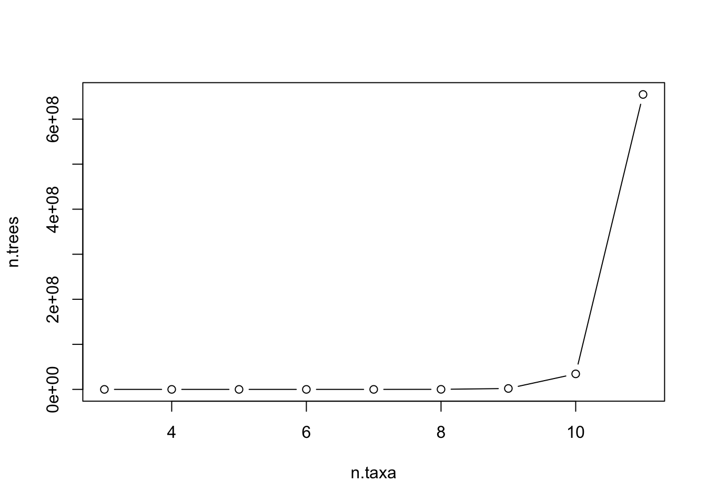

Chapter 44 Tutorial: Writing functions to calculate the number of phylogenetic trees
By Nathan Brouwer
44.1 Repliminaries
44.1.1 Functions
- factorial()
- seq()
- print()
- c()
- if()
- function()
- args()
44.2 Concepts
44.2.0.1 Biology Concepts:
- Number of possible phylogenetics trees
44.2.0.2 Programming concepts
- vectorized inputs to functions
- conditional statements
- Role of arguments in writing function
- Role of { and } in writing functions
- function source code
- functions with defaults
- functions with 1 arguments
- functions with 2 arguments
44.2.1 Vocab:
44.2.1.1 Programming vocab
- function
- function argument
- function default
- conditional statement
44.2.2 Packages:
None
44.3 Introduction
44.4 Number of rooted trees
The number of possible rooted phylogenetic trees is calculated using the equation below, where n is the number of taxa:
\(\frac{(2*n-3)!}{2^{n-2} * (n-2)!}\)
44.5 Number of rooted trees in R
In R we take factorials using the factorial() function
factorial(3)## [1] 63*2*1## [1] 6factorial(4)## [1] 244*3*2*1## [1] 24We can re-write our text equation above as: factorial(2n-3)/(2^(n-2))*(factorial(n-2))
In R would be for n = 3
n<-3
factorial(2*n-3)/((2^(n-2))*factorial(n-2))## [1] 3For n = 4
n<-4
factorial(2*n-3)/((2^(n-2))*factorial(n-2))## [1] 15All of the parentheses make this a bit nutty. Let me write this out as a separate numerator and denominator
#numerator
numerator <- factorial(2*n-3)
#denominator
denominator <- 2^(n-2)*factorial(n-2)
#division
numerator/denominator## [1] 1544.6 Functions in R
Functions in R have the general format
function_name <- function(arguments = ...){
output <- ... # math etc saved to object
print(output)
}The function_name can be any valid R object name. The function function() creates the function.
A function can have any number of arguments. Note that the arguments are enclosed in parentheses, and after the last ) there is a }.
After all the stuff inside the function (e.g. the math we want the function to do) its finished with a }.
44.7 Function to calculate the number of possible phylogenetic trees
We can set up a function to encapsulate this. We’ll call the function tree_count(). It has one argument (n), the number of taxa on the tree. We’ll set the default value of the argument to be n = 3 taxa.
I use the function print() at the end so that the function actually returns output. If this isn’t included then nothing will be returned by the function.
In the code below note the locations of the following things
- function name
- function-making command
- The opening parenthesis
( - the argument
- the default
- the closing parenthesis
) - the opening curly bracket
{ - the math
- the
print()command - the closing curly bracket
}
# [ ]function-making command
# |
# [ ]Function | [ ] argument
# name | |
# | | | [ ]closing ")"
# | | | |
# | | [ ] "(" | | [ ]"{"
# | | \ | | /
tree_count <- function( n = 3 ){ # note the "}"
# [ ] math
numerator <- factorial(2*n-3)
denominator <- 2^(n-2)*factorial(n-2)
trees <- numerator / denominator
# [ ] print output
print(trees)
} # end with the "}"
#\
# [ ] "}"Does it work?
tree_count()## [1] 3tree_count(n = 3)## [1] 3When working on a function its also good to check your output against against a source with the correct results. Tables with the number of trees per taxa are in many books, and also available here: https://en.wikipedia.org/wiki/Phylogenetic_tree
We can view the function source code by just running the name of the function without any parentheses (or arguments)
tree_count## function( n = 3 ){ # note the "}"
##
## # [ ] math
## numerator <- factorial(2*n-3)
## denominator <- 2^(n-2)*factorial(n-2)
## trees <- numerator / denominator
##
## # [ ] print output
## print(trees)
##
## }
## <bytecode: 0x7f7f0e342180>We can see just the arguments, and any defaults, for a function using args()
args(tree_count)## function (n = 3)
## NULLASIDE: The print() function is key. Make and run this function and see what happens.
#/ don't forget this!
tree_count_bad <- function(n = 3){
# math
numerator <- factorial(2*n-3)
denominator <- 2^(n-2)*factorial(n-2)
trees <- numerator / denominator
}
#\ don't forget this!
tree_count_bad()END ASIDE
How rapidly does the number of possible trees grow?
tree_count(n = 3)## [1] 3tree_count(n = 4)## [1] 15tree_count(n = 5)## [1] 105tree_count(n = 6)## [1] 945One of my favorite example data sets has 11 taxa.
tree_count(n = 11)## [1] 654729075This number grows very rapidly. According to Bianconi et al (2012) there are 3.72*10^13 cells in the body (37,200,000,000,000, or 3.72e13).
### with all the zeros
37200000000000## [1] 3.72e+13### "e" scientific notation
3.72e13## [1] 3.72e+133.72e+13## [1] 3.72e+13If we put 14 taxa on a tree there are this many possible trees
tree_count(n = 14)## [1] 7.905854e+12If we put 15 taxa on the tree
tree_count(n = 15)## [1] 2.13458e+1444.8 Vectorized inputs to functions
One of R’s most powerful features is that it works on vectors. I want to make a plot of the the number of possible trees for 3 to 11 taxa. I can make a vector any way I chose
#typing out all numbers
n.taxa <- c(3,4,5,6,7,8,9,11)
# using seq with arguments spelled out
n.taxa <- seq(from = 3,to = 11,by = 1)
#using seq w/o arguments
n.taxa <- seq(3, 11, 1)
#shortcuts
n.taxa <- c(3:11)
n.taxa <- 3:11I can then put the vector as an input into my function
tree_count(n = n.taxa)## [1] 3 15 105 945 10395 135135 2027025
## [8] 34459425 654729075I can save this output to a vector
n.trees <- tree_count(n = n.taxa)## [1] 3 15 105 945 10395 135135 2027025
## [8] 34459425 654729075And plot things. type = “b” plots points and a line.
plot(n.trees ~ n.taxa, type = "b")
44.9 Adding conditional statements
The equation above is only valid for 2 or more taxa. If we put in a lower number the result doesn’t make sense
tree_count(n = 0)## Warning in gamma(x + 1): NaNs produced
## Warning in gamma(x + 1): NaNs produced## [1] NaNtree_count(n = 1)## Warning in gamma(x + 1): NaNs produced
## Warning in gamma(x + 1): NaNs produced## [1] NaNOnly when we put in 2 or more taxa does it work
tree_count(n = 2)## [1] 1tree_count(n = 3)## [1] 3Additionally, we can input non-integers and get a result.
tree_count(n = 3.5)## [1] 6.383076We can add a conditional statement so that if 0 or 1 are input then an warning is given. Conditional statements test a logical condition which, if false, can be used to throw a warning, error, etc.
I’ll use the conditional statement if(n < 3) to test if the number of taxa entered into my tree_count() function is going to be valid. The warning() function allows me to remind the user of the function of what they should enter.
Note that the conditional statement has the logical operation in parentheses, eg (n <2), and then what to do if n < 2 is true in curly brackets
tree_count2 <- function(n = 3){
# conditional statement
## is n a valid number for using in this equation?
## if it is NOT, throw a warning
## if it is a valid number, skip everything in the
## { } and go to the math
if(n < 3){
# warning if test is TRUE
warning("This function is only valid for 2 or more taxa.")
}
# If test is FALSE (n = 3 or n > 3)
## continue with the math
numerator <- factorial(2*n-3)
denominator <- 2^(n-2)*factorial(n-2)
trees <- numerator / denominator
# print the results
print(trees)
}Now we can test this
tree_count2(n = 0)## Warning in tree_count2(n = 0): This function is only valid for 2 or more taxa.## Warning in gamma(x + 1): NaNs produced
## Warning in gamma(x + 1): NaNs produced## [1] NaNtree_count2(n = 1)## Warning in tree_count2(n = 1): This function is only valid for 2 or more taxa.
## Warning in tree_count2(n = 1): NaNs produced
## Warning in tree_count2(n = 1): NaNs produced## [1] NaN44.10 Adding multiple conditional statements
The tree_count2() function above is still throwing error messages because even though it doesn’t work with n <2, and even though its now giving us a warning, its still dong the math. We can add a second conditional statement around the math to remedy this.
tree_count2b <- function(n = 3){
# conditional statement with if(){...}
## the condition: if n < 2,
if(n < 2){
# the result
warning("This function is only valid for 2 or more taxa.")
}
#do the math
if(n > 2){
numerator <- factorial(2*n-3)
denominator <- 2^(n-2)*factorial(n-2)
trees <- numerator / denominator
#return the result
return(trees)
}
}Now we just get the warning we wrote but nothing else
tree_count2b(0)## Warning in tree_count2b(0): This function is only valid for 2 or more taxa.tree_count2b(1)## Warning in tree_count2b(1): This function is only valid for 2 or more taxa.44.11 Adding additional arguments
Perhaps we want provide the option of always printing the results in scientific notation. We can another argument to our tree_count() function called “format.” If the argument is set to “sci,” “scientific” or “e,” the function will change the options for how numbers are printed.
tree_count <- function(n = 3, # 1st argument: number of taxa
format = "standard"){ # 2nd argument: format
# conditional statement with if(){...}
## the condition: if n < 2,
if(n < 2){
# the result
warning("This function is only valid for 2 or more taxa.")
}
# the math
numerator <- factorial(2*n-3)
denominator <- 2^(n-2)*factorial(n-2)
trees <- numerator / denominator
# another conditional statement:
## set formatting
if(format %in% c("sci","scientific","e")){
options(scipen = -2,digits = 3)
}
# print the output
print(trees)
# re-set the formatting
options(scipen = 0,digits = 7)
}Check out the source code
tree_count## function(n = 3, # 1st argument: number of taxa
## format = "standard"){ # 2nd argument: format
##
## # conditional statement with if(){...}
## ## the condition: if n < 2,
## if(n < 2){
##
## # the result
## warning("This function is only valid for 2 or more taxa.")
## }
##
## # the math
## numerator <- factorial(2*n-3)
## denominator <- 2^(n-2)*factorial(n-2)
## trees <- numerator / denominator
##
## # another conditional statement:
## ## set formatting
## if(format %in% c("sci","scientific","e")){
## options(scipen = -2,digits = 3)
## }
##
## # print the output
## print(trees)
##
## # re-set the formatting
## options(scipen = 0,digits = 7)
## }Check out the agruements
args(tree_count)## function (n = 3, format = "standard")
## NULLCheck the output
tree_count(n = 10)## [1] 34459425tree_count(n = 10, format = "sci")## [1] 3.45e+07tree_count(n = 10, format = "scientific")## [1] 3.45e+07tree_count(n = 10, format = "e")## [1] 3.45e+0744.12 Assignment: _un_rooted trees
We often don’t root phylogenetic trees. This reduces the number of possible trees and is described by the equation
Text (note: this had a typo in previous version of assignmen!) (2n-5)!/(2^(n-3))(n-3)!
Rendered:
\(\frac{(2*n-5)!}{2^{n-3} * (n-3)!}\)
44.13 Assignment part 1
Modify the equation used above to work for unrooted trees. Call the function tree_count_unrooted() Compare your results to http://carrot.mcb.uconn.edu/mcb396_41/tree_number.html
You can use the simplest form of the function which doesn’t have any additional argument, eg
#NOTE: this is for a ROOTED TREE
## change math to be for UN-ROOTED TREE
## change name of function to t()ree_count_unrooted
tree_count_rooted <- function(n = 3){
numerator <- factorial(2*n-3)
denominator <- 2^(n-2)*factorial(n-2)
trees <- numerator / denominator
return(trees)
}
#Always test!
tree_count_rooted(4)## [1] 1544.13.1 Part 1 answer
tree_count_unrooted <- function(n = 3){
numerator <- factorial(2*n-5)
denominator <- 2^(n-3)*factorial(n-3)
trees <- numerator / denominator
return(trees)
}CHeck against
tree_count_unrooted(n = 3)## [1] 1tree_count_unrooted(n = 4)## [1] 3tree_count_unrooted(n = 5)## [1] 15Compare rooted and unrooted
tree_count_unrooted(n = 5)## [1] 15tree_count_rooted(n = 5)## [1] 10544.14 Assignment part 2
Create a function that will work for rooted OR unrooted trees. Do this by adding an additional argument like
type = “rooted”
and conditional statements like
if(type == “rooted”){ #do this }
if(type == “unrooted”){ #do something else }
Again, you can use the simplest form of the argument.
(Note: there was a typo in the original version of this where there were missing quotation marks around “rooted” and “unrooted” eg "rooted, so if you copy and pasted the code - which is what I would’ve done! - it wouldn’t have worked).
44.14.1 Answer
here is one way this could be written.
tree_count3 <- function(n = 3,
type = "rooted"){
if(type == "rooted"){
#run rooted vs. of the calculation
numerator <- factorial(2*n-3)
denominator <- 2^(n-2)*factorial(n-2)
trees <- numerator / denominator
}
if(type == "unrooted"){
#unrooted version of the equation
numerator <- factorial(2*n-5)
denominator <- 2^(n-3)*factorial(n-3)
trees <- numerator / denominator
return(trees)
}
return(trees)
}Check the answer
tree_count3(n= 5, type = "rooted")## [1] 105tree_count3(n= 5, type = "unrooted")## [1] 15We can plot rooted vs unrooted
n.taxa <- seq(3,9,1)
y.rooted <- tree_count3(n= n.taxa, type = "rooted")
y.unrooted <- tree_count3(n= n.taxa, type = "unrooted")
plot(y.rooted ~ n.taxa, type = "b")
points(y.unrooted ~ n.taxa, type = "b", col = 3, lty = 2)